呼叫奥特曼！
——某网友
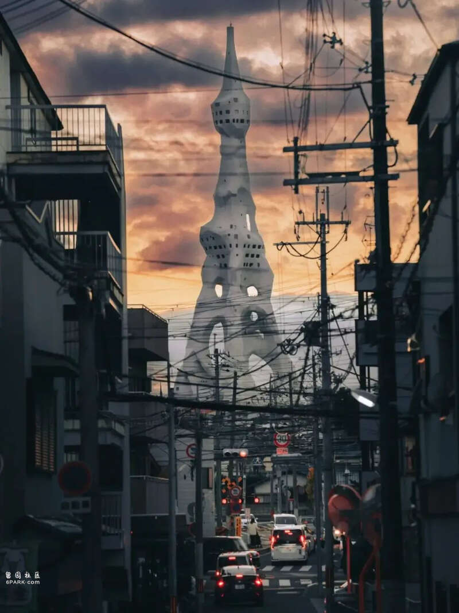
大阪最魔幻的一座塔！
很多人第一眼看到
以为是AI生成的
但实际上
它建造于1970年
已经54岁了！
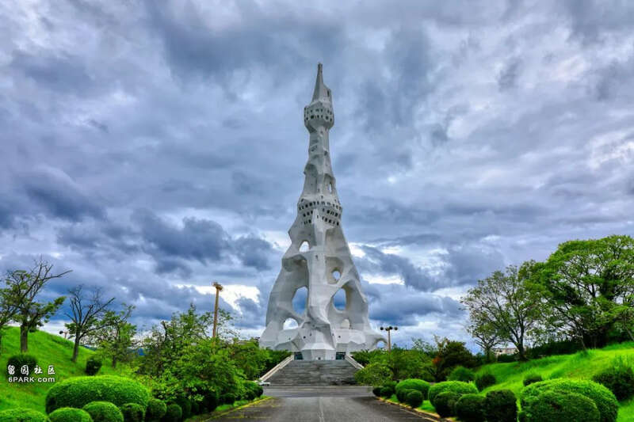
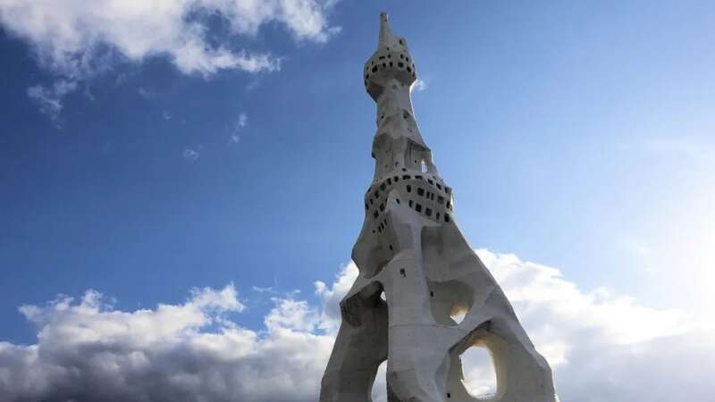
塔身的白色不规则曲线石头造型
让人想起了西班牙“天才建筑师”高迪的作品
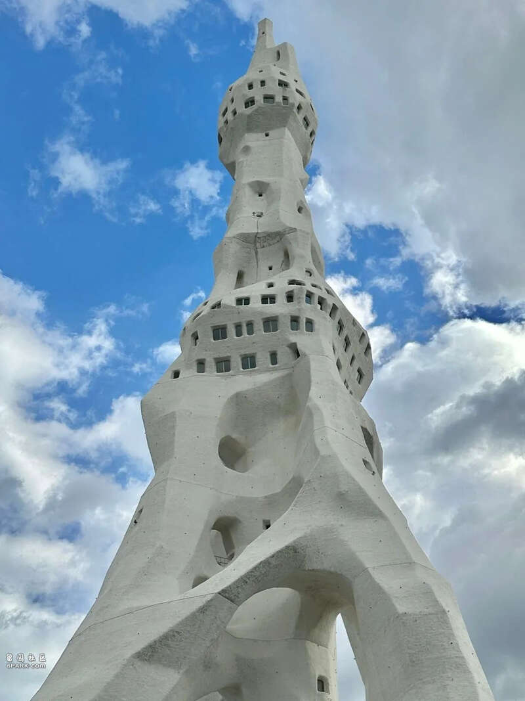
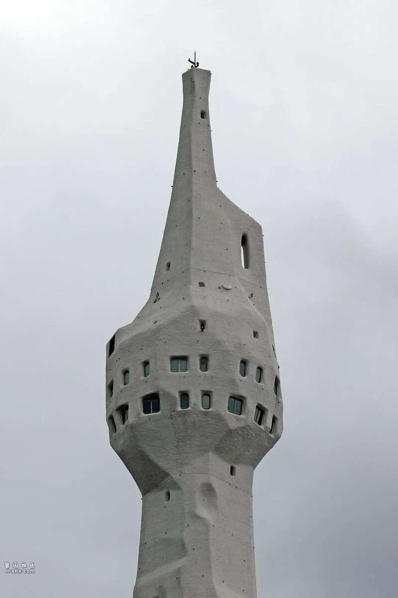
顶部向上细细的塔身
远看像是对着天空竖了一根中指！
因为太过魔幻
不少网友戏称：
不愧是奥特曼诞生的地方
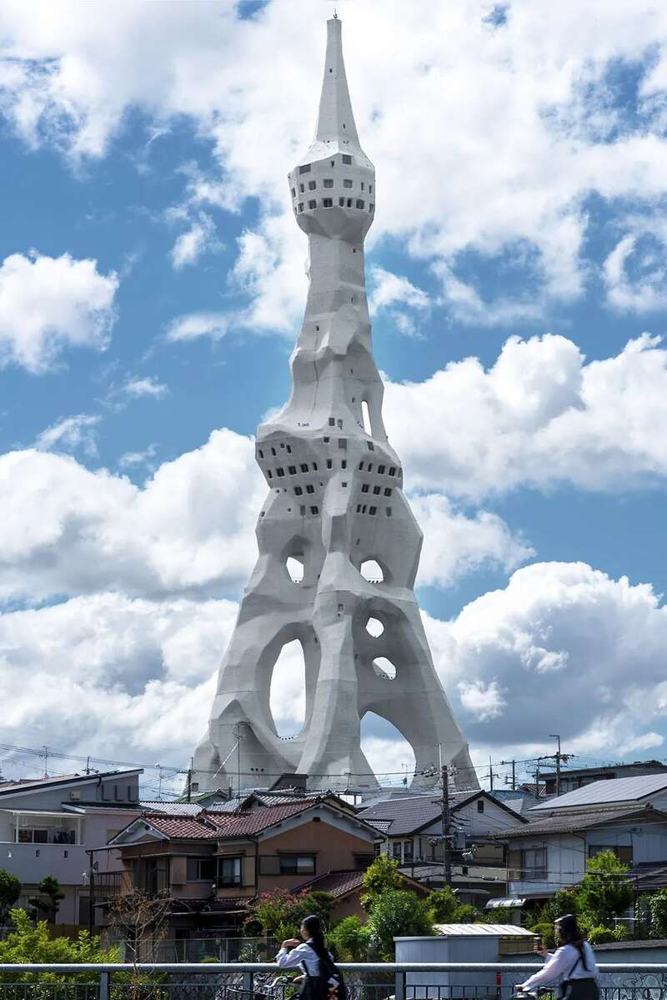
而这座塔也有一个非常长的名字
“超级宗派世界大战受难者和平祈祷塔”
听着是不是有点中二？
但它确实有着正儿八经的宗教背景
是由完美自由教团的二代教主三木德香
联合日建贸易设计
东急株式会社共同设计建造
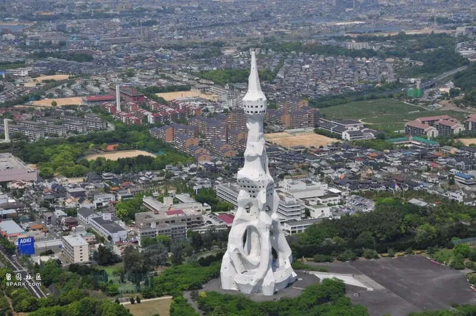
整座塔高达180米左右
是为了纪念和安息历史上
所有因战争而死去的人的亡魂
不分种族、民族、国家、宗教、信仰等
并向大家推行“完美的自由”
“人生就是艺术”的人生观
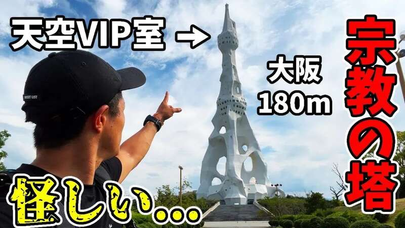
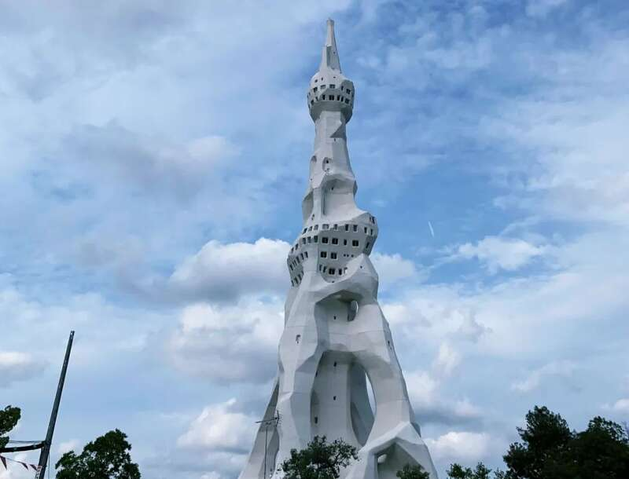
每年的8月1日
塔底都会举办追悼纪念仪式大
家聚在一起
共同祈祷世界和平
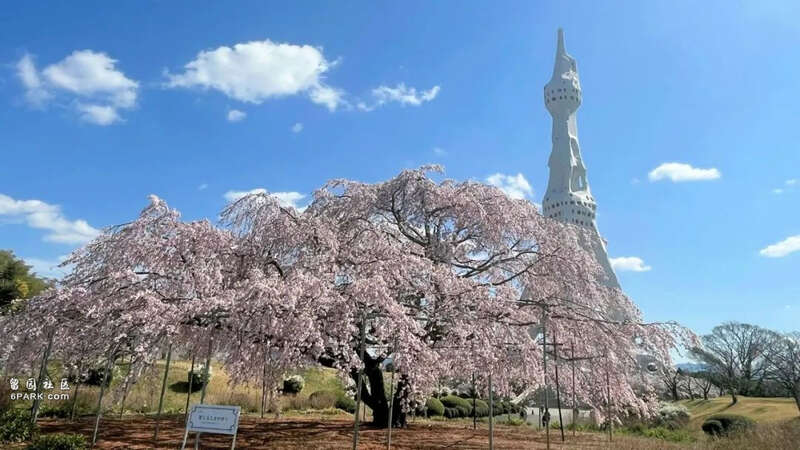
不得不说
一到晚上，这座魔幻的巨塔
和城市周围矮小的建筑
形成强烈的反差
让人感觉非常的不真实！
再加上本身的宗教性质
多少有点怪怪的
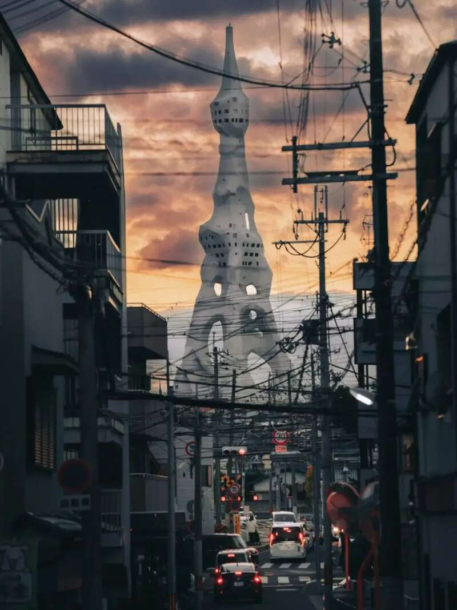
抛开这些不说
这座大平和祈念塔
本身的建筑造型还是非常超前的
不知道有去大阪实际看过的小伙伴吗？
Advertisements